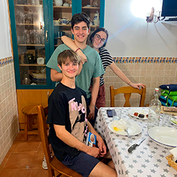
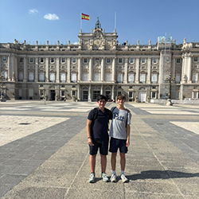
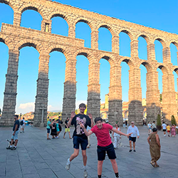

The Country
While we stayed at home or in the small town some days, we did a lot of exploring around the country. Thanks to Spain’s relatively small geographical size and rich history, I was able to experience life from a thousand different angles without having to travel too far.
Unfortunately, Spain is not a very comfortable country in the Summer due to the immense heat (that is impossible to predict because they use celsius), and thus we were not able to travel to certain places like Toledo as we did not want to boil alive in the streets!
Nuevo Baztán
The town where the family with which I stayed lives is called Nuevo Baztán, which is in the province of Madrid, about a thirty minute drive from the city of Madrid. The town is tiny, with less than one hundred people living in the proper town, and less than a thousand in the surrounding area. You can walk from one side of Nuevo Baztán to the other in about thirty seconds. The town doesn’t have much more than the carnicieria (meat shop) owned by my host family, a convenience store, a bus stop, and a small museum about the town’s history (of which there is not much).
 Madrid (City)
I have a little bit more to say about the famous capital of Spain. We took the hour-long bus ride to the city of Madrid more than five times back and forth in the two weeks I was there. We would go to Madrid to hang out with Gonzalo’s friends, see the sights, shop Madrileño fashion, or to just live like a Spaniard. This was not my first time in Madrid, as I went with my family a few years ago, but this time I had an insider (Gonzalo) who could show me what I actually wanted to see. We saw el Palacio Real, la Puerta del Sol, el Mercado de San Miguel, el Parque Retiro, el Museo Prado, and a lot more.
Segovia
Instead of going to what some consider the most beautiful city in the world, Toledo, because it was a million degrees out, we decided to take a day trip to go to Segovia with the entire host family. After about a two and a half hour drive from Nuevo Baztán, we arrived in the historic city. In Segovia, we tried its signature cochinillo (suckling pig), saw the ancient Roman aqueducts, took a tour of el Alcazár de Segovia (an old king’s castle), and saw the city’s ornate cathedral. The day we went to Segovia was one of my favorites, not just for the city, but also for the time I spent with my host family all together.

Mondéjar
While Gonzalo’s father was born and raised in Nuevo Baztán, his mother is from a town in the neighboring Spanish province of Guadalajara, about a twenty minute drive from Nuevo Baztán. We visited Mondéjar even more than we did Madrid, even spending two nights at Gonzalo’s grandmother's house after a family reunion in the town. Despite the town’s small size, it is filled with rich history and landmarks spanning back hundreds of years. Many of Gonzalo’s friends live in Mondéjar, so we hung out with them many times there as well.